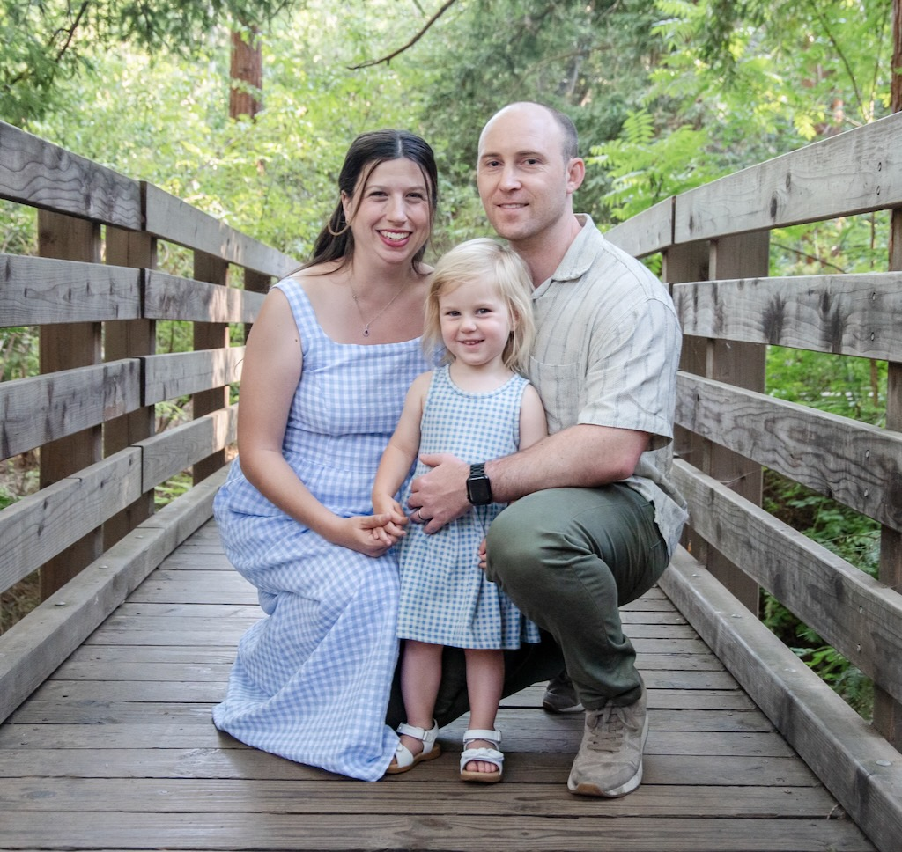
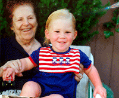

Ryan Alexander Henderson was born on May 27, 1990 at Kaiser Permanente Medical Center at 900 Kiely Boulevard in Santa Clara, California. His middle name comes from Greg's father, Alexander Dawson Henderson III.
| May 27, 1990 | Born in Santa Clara, California. He is the 1st son of Greg and Louise Henderson. |
 |
| 1991 | Ryan visted his great-grandmother in Connicut on a family visit. His great-grandmother was 90 years old. | |
| 1999 | Ryan and Dawson in a kayak in Monterey Bay |